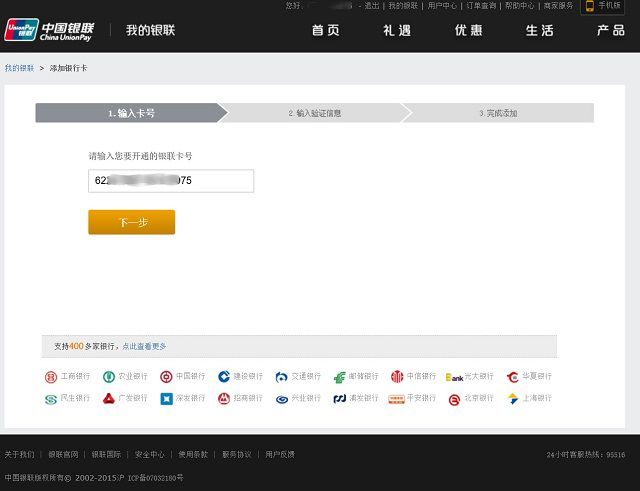

<div class="jt-wrap" ng-controller="ylktCtrl">
	<!-- <div class="title"><span>银联无卡在线支付开通指南</span></div> -->
	<div class="list-box bank-open">
		<div class="mtitle ltitle" style="font-size: 24px;">如何开通银联在线支付？</div>
		<div class="mtitle ltitle">登录银联持卡人服务网站后，点击开通在线支付链接“<a href="https://www.95516.com/portal/open/init.do?entry=open" target="_blank">https://www.95516.com/portal/open/init.do?entry=open</a>”，跳转至开通在线支付页面。在线开通银联在线支付仅需三步：</div>
		<div class="mtitle">第一步：输入银行卡卡号</div>
		
		<div class="mtitle">第二步：输入卡验证信息</div>
		
		<div class="mtitle">第三步：开通成功</div>
		
	</div>
</div>